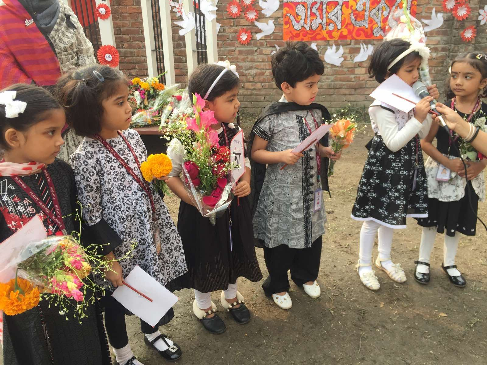
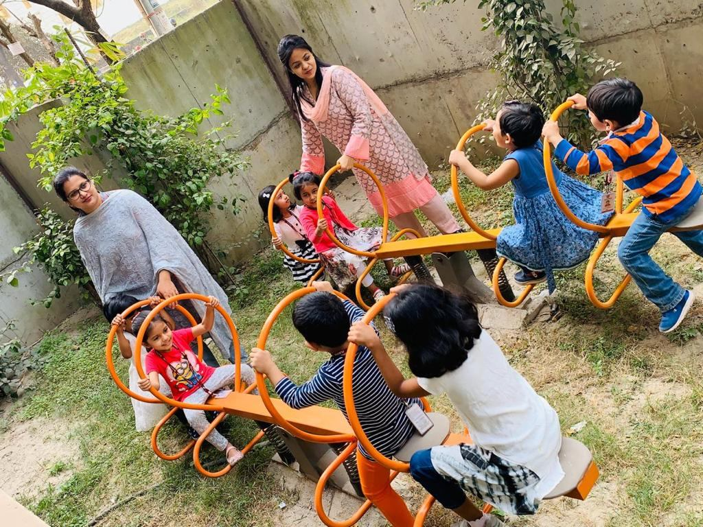
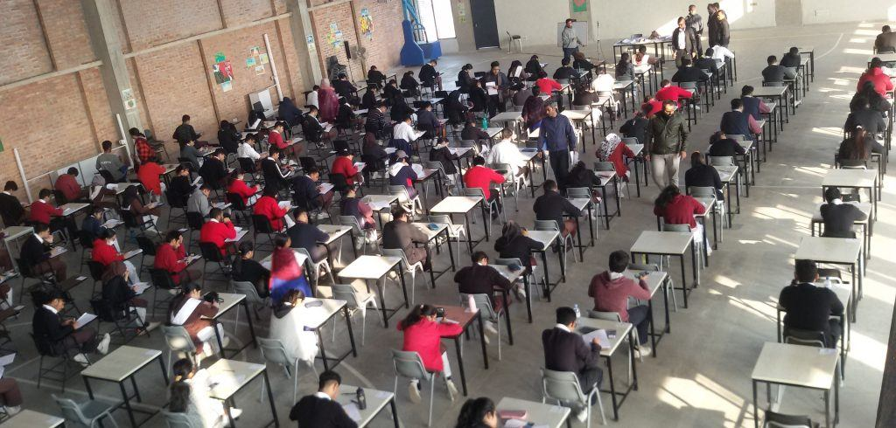
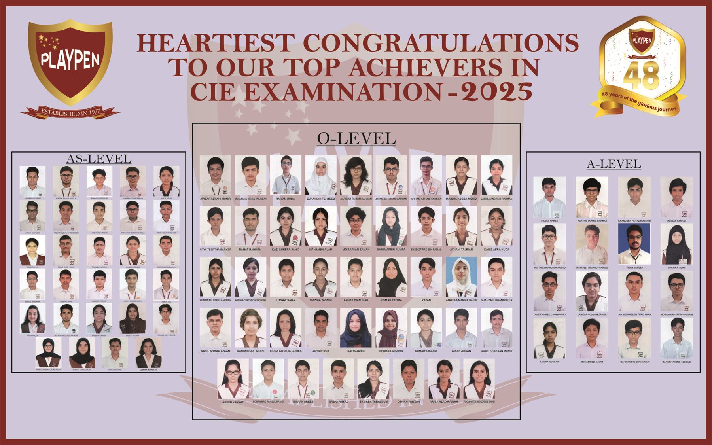

A Cambridge education, from the early years to A Level.
Playpen follows the Cambridge curriculum from the Elementary Level right up to the Senior Levels — Ordinary and Advanced. One pathway, four stages, no discontinuity.
Academic overview
One curriculum, followed all the way through.
The advantage of a single curriculum from Playgroup to Class XII is that nothing has to be unlearned. A child who joins Playpen at three and leaves at eighteen has been taught within one coherent framework the whole time.
Within that framework, each stage is designed around what children of that age actually need: play and fine motor skills in the early years; unhurried consolidation in the junior classes; independent thinking and technology in the middle school; and rigorous examination preparation in the senior school.
The medium of instruction is English throughout, with a deliberate emphasis on preserving the Bengali language and on awareness of Bangladesh’s cultural heritage and its secular community values.
Jump to a stage

Stage 01 · Playgroup to KG II
Elementary School
The curriculum at the Elementary Level aims to develop a child’s moral, mental and physical capabilities, focusing on basic learning tools that build competence.
In the early years — Playgroup and Nursery — the focus is on communicative and social skills, with attention to cognitive growth and the practice of logical thinking. We work on fine motor skills through structured activity, and teachers accompany students throughout the day to help social skills develop alongside academic ones.
Playgroup
Students develop self-esteem and the foundational skills that shape their future academic aptitude and attitude.
KG I & KG II
Emotional, physical and mental growth supported by trained teachers and engaging activities, prioritising safety and confidence.
- Functional English
- Fine motor skills
- Group work
- Discipline & punctuality
- Social skills
- Activity-based learning
Stage 02 · Class I to III
Junior School
“Children must be taught how to think, not what to think.”
The Junior curriculum is structured so that students are never put under pressure. They are encouraged to learn at their own pace, while developing good behaviour, interpersonal communication skills and social etiquette.
A strong foundation in English at the primary level matters because it unlocks everything else — Mathematics, Science, Bangla and the rest. The lessons acquired here equip students with the skills the next stages demand.
English
Foundation-level instruction, treated as essential for acquiring knowledge in every other discipline.
Mathematics
Fundamental and logical concepts, beginning with addition and subtraction using visual aids.
Bangla
Reading, writing and recitation, developing communication ability and cultural awareness.
Assessment. The school uses multiple assessment tools and issues Progress Reports across two semesters each year.




Stage 03 · Class IV to VII
Middle School
Playpen prides itself on putting students’ educational needs at the forefront through innovative teaching techniques and strategies.
Students from Class IV to VII study their core subjects through dynamic learning, picking up concepts and ideas from their texts and from classroom discussion. They also connect to technology to advance their skills and knowledge, extending that learning through hands-on experience.
Learning is engrained better when students are fully engaged. Our highly qualified teachers design their curriculum around students, encouraging them to develop individual learning styles as education constantly evolves. Students are encouraged to think outside the box and are motivated to approach their academics with real zest.
- Core subjects
- Technology integration
- Hands-on projects
- Collaborative problem solving
- Independent critical thinking
- Bengali & cultural heritage
Stage 04 · Class VIII to XII
Senior School — the Cambridge examinations.
In the Senior School we prepare students for CAIE (Cambridge Assessment International Education) through Ordinary, Advanced Subsidiary and Advanced Level examinations — international qualifications recognised by the world’s best universities and employers.
These qualifications give students a wide range of options in their education and their careers. Our aim in the senior segment is also to balance knowledge, understanding and skills, providing a solid foundation for the rest of their educational journey — and, along the way, helping them develop an informed curiosity and a lasting passion for learning.
Alumni go on to study at premier universities around the world. Our staff hold advanced international qualifications in their respective disciplines.

The O Level pathway
Students in Class VIII select their elective subjects at the end of the second semester. The minimum requirement is six subjects.
Compulsory: English Language, Bengali, and Mathematics (Syllabus D).
Electives: nine further subjects across sciences, commerce, computing and art.
The A Level pathway
A Level instruction began at Playpen in 2013. The minimum requirement is three subjects.
Nine subjects are offered, covering the science, commerce and computing routes that Bangladeshi and international universities most commonly ask for.
Students receive university and career guidance from the Senior Vice-Principal and Teacher In-Charge throughout.
Subjects
What students can study.
The current offering at Ordinary and Advanced Level. Subject availability is confirmed by the school each academic year.
O Level · minimum 6 subjects
Compulsory
English Language
The medium of instruction throughout the school, and the foundation for every other subject.
Bengali
Reading, writing and recitation, sustaining the language and the cultural heritage that goes with it.
Mathematics (Syllabus D)
The standard Cambridge O Level mathematics syllabus, building on the logical foundations laid in the junior classes.
Elective
Physics
Mechanics, waves, electricity and modern physics, supported by practical work in the school laboratory.
Chemistry
Physical, inorganic and organic chemistry, with laboratory practicals endorsed by Cambridge and the British Council.
Biology
Cells, physiology, genetics and ecology, with dissection and microscopy in the biology laboratory.
Additional Mathematics
For students intending to take Mathematics, Physics or Engineering further at A Level and beyond.
Economics
Micro and macroeconomics, and the reasoning that underpins policy and business decisions.
Accounting
Financial record-keeping, statements and analysis — the groundwork for commerce at A Level.
Business Studies
How organisations are structured, financed, marketed and managed.
Computer Science
Computational thinking, programming and systems, taught in the school’s IT laboratory.
Art & Design
Studio practice and design thinking, connected to the school’s art and craft programme.
A Level · minimum 3 subjects
English Language
Advanced language and analysis, for students heading into humanities, law, media or communications.
Mathematics
Pure mathematics with mechanics and statistics, the prerequisite for most engineering and science degrees.
Physics
The advanced syllabus, with the practical component taught in the school’s physics laboratory.
Chemistry
Required for medicine, pharmacy, biochemistry and most engineering routes.
Biology
The foundation for medicine, dentistry, biotechnology and the life sciences.
Economics
Advanced micro and macroeconomics, widely required for business and economics degrees.
Accounting
Advanced financial and management accounting, for students heading towards professional qualification.
Business
Strategy, operations, marketing and human resources at advanced level.
Computer Science
Algorithms, data structures, architecture and advanced programming.
Please confirm before applying. Subject availability can change from year to year depending on staffing and student numbers. Contact the Admissions Office to confirm the current offering for your child’s intended entry year.
Assessment & examinations
How progress is measured.
The school academic year is divided into two semesters. A formal written examination is taken at the end of each semester.
Students in the Junior and Senior sections must attain certain passing marks in the core subjects to be considered for promotion to the next class. Progress Reports are issued across the two semesters, and in the junior classes a range of assessment tools is used alongside the formal papers.
Parents can follow academic performance, class tests, class work markings, homework, report cards, attendance and punctuality through the Parent & Student Portal, rather than waiting for a report at the end of term.



Learning resources
Library and laboratories.
The Library
Children should read Reader’s Digest, books, magazines, periodicals and newspapers available in the library, to improve both their English and their ideas. Library Classes run for all levels, supervised by a Librarian; students typically gravitate towards story and adventure titles.
The library was modernised in the new campus and has the school bookshop attached to it.
Borrowing. The Librarian notifies parents through the Class Teacher when a book has not been returned. If a student cannot return a book after a set period, it becomes the parent’s responsibility to replace it with a similar copy or to pay its cost.
The Laboratories
The Physics, Chemistry, Biology and Computer Science Laboratories carry state-of-the-art, international facilities. They are endorsed by Cambridge and the British Council.
The laboratories are spacious, completely equipped, and secure for both students and instructors — which matters as much as the equipment itself.
- Physics Laboratory
- Chemistry Laboratory
- Biology Laboratory
- Computer Science Laboratory
Student support
Someone is always on standby.
Student Counsellor
A designated member of the faculty is always on standby to answer any query, or to provide advice and support to our students as and when they need it. The counsellor assists with academic concerns, non-academic issues, and behavioural matters flagged by educators.
Career Counsellor
The Senior Vice-Principal and Teacher In-Charge are always available to give guidance and advice on career choices, university applications, procedures and the guidelines students need to embark on higher study at home and abroad.
University and college applications
Senior class students receive support materials for their college and university applications — including recommendation letters, transcripts and testimonials, with emphasis on both academic results and extracurricular achievement.
Workshops and seminars run through the year covering internet safety and responsible social media use, university application support for international institutions, Model United Nations, United World College programmes, and the Duke of Edinburgh’s Award.

Admissions
Come and see the school for yourself.
Speak to our Admissions Office, collect a form, or arrange a campus visit during office hours.